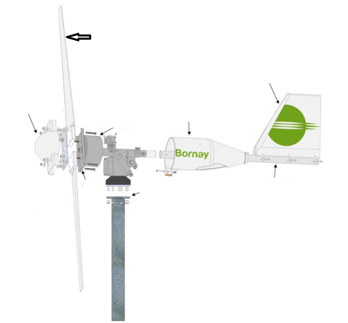
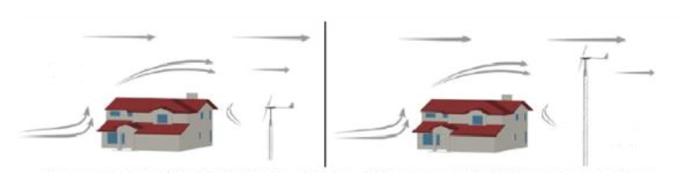
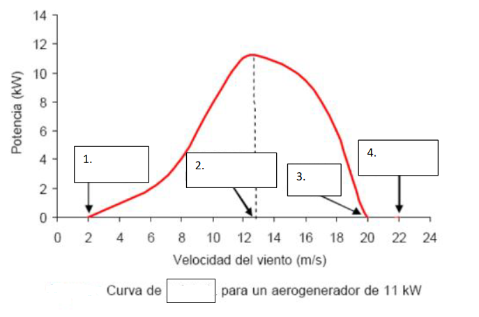
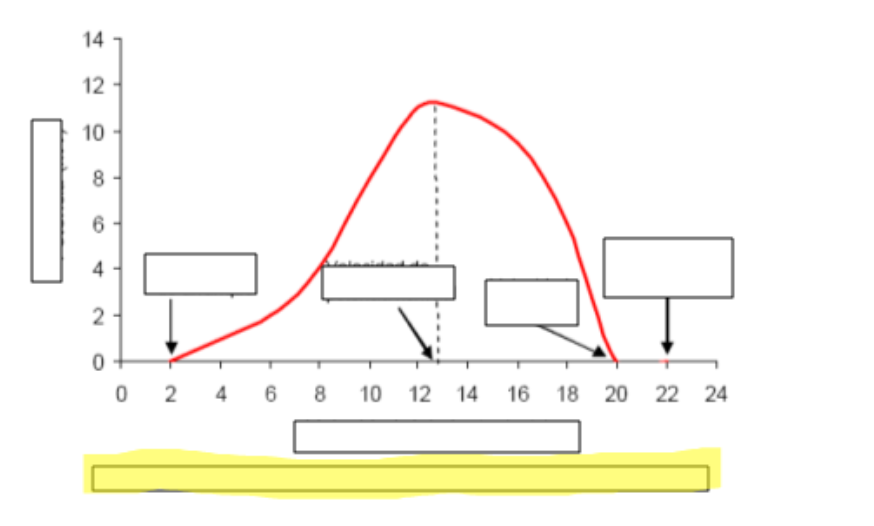
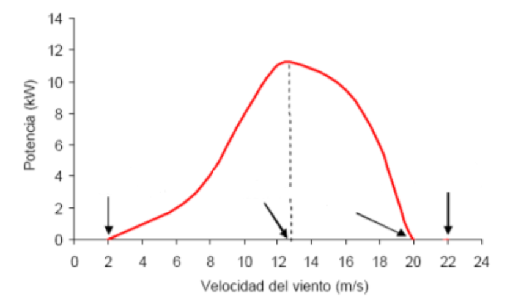
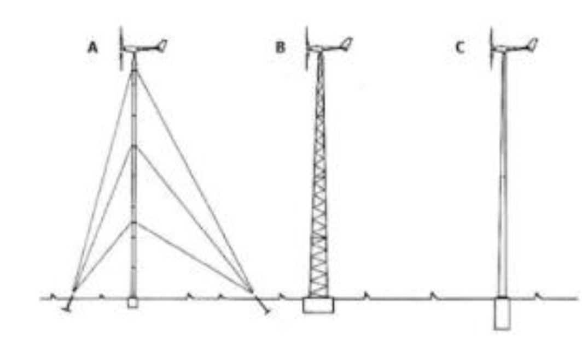
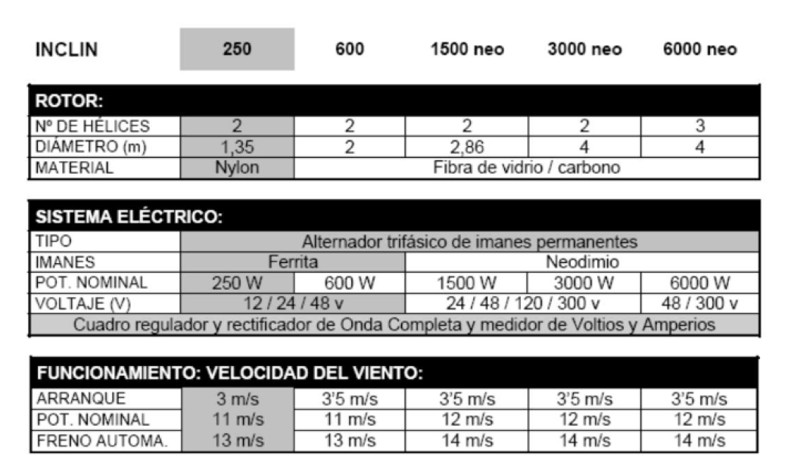
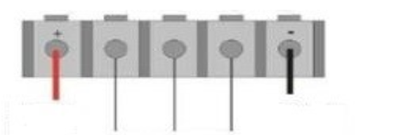
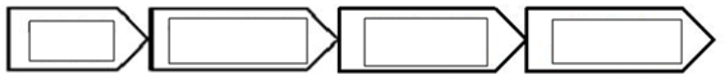

PREGUNTAS EXAMEN MINIEÓLICA
Realizadas por los alumnos curso 2023/2024- Escribe la formula de la potencia eolica
- ¿Qué es la energía minieólica?
- Cuales son las aplicaciones más comunes de los mini aerogeneradores.
- Cuál es la potencia típica de un aerogenerador.
- ¿Cuándo se considera un mini aerogenerador de muy baja potencia y donde se utiliza?
- Que factores habrá que tener en cuenta para instalar un mini aerogenerador cerca de una vivienda.
- Partes de un mini aerogenerador
 - ¿Es recomendable la instalación de toma tierra? ¿Y por qué?
- ¿Cuál de estos dos mini aerogeneradores esta bien situado y por qué? 
- En lo alto de un edificio se decide instalar un mini
aerogenerador, ¿cual seria el lugar mas indicado para ponerlo?
Explica por qué
- ¿Qué sistemas de control y monitoreo se utilizan típicamente en los mini aerogeneradores?
- ¿Qué factores ambientales pueden afectar el rendimiento de un mini aerogenerador?
- Según esta grafica a que velocidades se producen los siguientes eventos los siguiente datos: Velocidad de arranque, Velocidad de arranque, -Velocidad de freno,Velocidad de supervivencia.
- ¿Explica cada uno de los datos antes dados?
- ¿Cuál es la vida útil esperada de un mini aerogenerador?
- ¿Cuáles son los componentes de un sistema mini eólico?
- ¿Qué ventajas ofrece la energía mini eólica en comparación con otras fuentes de energía renovable?
- ¿Cuáles son las condiciones climáticas extremas que pueden afectar la operación de un mini aerogenerador?
- Viendo el siguiente dibujo, explica de que se trata.
- Tipos de corriente que generan los aerogeneradores.
- ¿Importa la polaridad de los cables del aerogenerador?
- Viendo la siguiente tabla contesta a las siguientes preguntas del aerogenerador 6000 neo: cuantas palas tienes, superficie que abarcan las palas, Voltaje que suministra, Intensidad nominal, para velocidades de viento de 30Km/h en que regimen está funcionando el aerogenrador.
- ¿Se pueden poner varios aerogeneradores en paralelo?
- ¿Cómo se puede saber la potencia que está entregando el aerogenerador?
- Precauciones que hay que tener para el montaje de un pequeño aerogenerador.
- ¿Qué es un regulador y para que se utiliza? Explica su funcionamiento de como gestina la corriente en caso de la carga de la instalación y el estado de las baterias. Y que se puede hacer con la energía sobrante.
- indica los bornes de conexiones del aerogenerador(conexión) y la batería 
- ¿Que es un regulador mixto?
- ¿Qué es un inversor?
- ¿Qué es un rectificador?
- Diferencia entre inversor y rectificador
- Dibuja la gráfica de un rectificador de media honda y de onda completa.
- Si las baterias de mi mini aerogenerador estan cargadas, ¿que puedes hacer con la energia sobrante?
- ¿Cómo se frena un pequeño aerogenerador?
- Cuál es el orden de montaje de un mini aerogenerador.
- Enumera y explica los sistemas de frenado de un mini aerogenerador.
- Escribe que es cada parte de las instalación de un aerogenerador y
cual es su función.


- Como deben de ser la sección de los cables que van de aergerador al regulador y del regulador a las baterias, de un aerogenrador de 400V, razona tu respuesta.